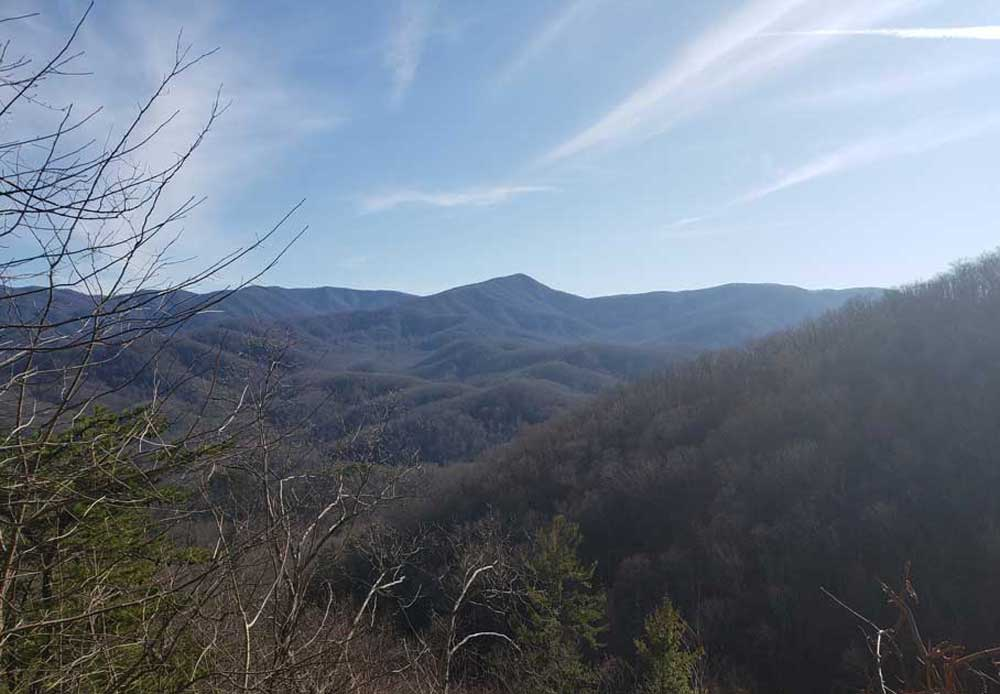
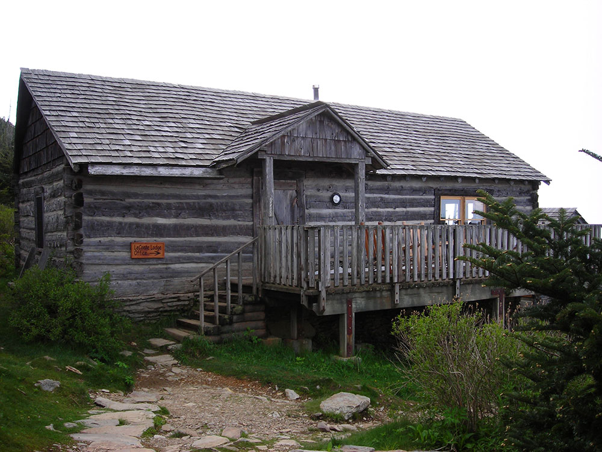
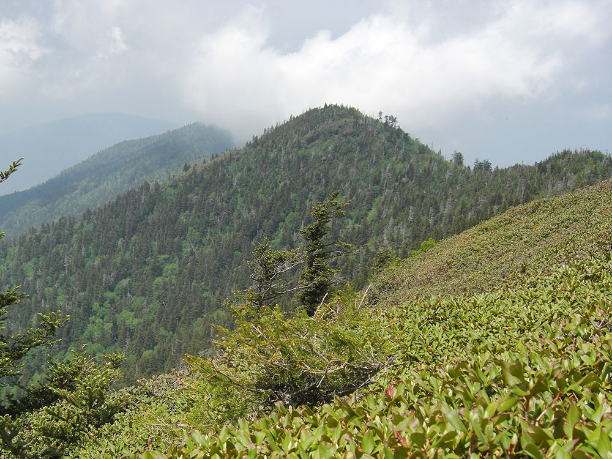
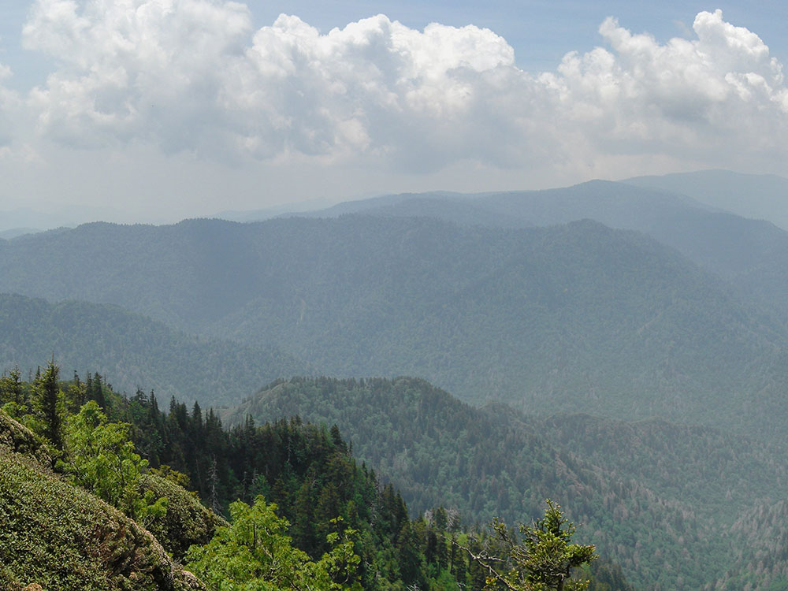

.jpg){kind=link}
Prominent mountain summit offering panoramic views, high-elevation forests, historic lodging, and access to one of the highest peaks in the eastern United States.
General Information
Daylight hiking is strongly recommended
Winter conditions may require traction devices due to snow and ice
Great Smoky Mountains National Park parking tag required for vehicles parked longer than 15 minutes
How to Get There
From Gatlinburg, TN (15 mi): Take US-441 S/Newfound Gap Road through Great Smoky Mountains National Park to Newfound Gap Overlook, begin on the Appalachian Trail, continue 2.7 miles to the Boulevard Trail junction, then follow the Boulevard Trail to Mount Le Conte.
Overview
Mount Le Conte (or LeConte) is a mountain located within the Great Smoky Mountains National Park. At 6,593 ft (2,010 m) it is the third highest peak in the national park, behind Clingmans Dome (6,643 feet (2,025 m)) and Mount Guyot (6,621 feet (2,018 m)). It is also the highest peak that is completely within Tennessee. From its immediate base to its summit, Mount Le Conte is the tallest mountain in eastern North America, rising 5,301 feet (1,616 m) from its base, near Gatlinburg, Tennessee (elevation 1,292 feet (394 m)).
There are four subpeaks above 6,000 feet (1,800 m) on the mountain (referred to as the LeConte massif): West Point (6,344 feet (1,934 m)), High Top (6,593 feet (2,010 m)), Cliff Tops (6,555 feet (1,998 m)), and Myrtle Point (6,200 feet (1,900 m)). In addition, Balsam Point, with an elevation above 5,840 feet (1,780 m), serves as the dramatic west end of the massif.
Mount Le Conte has the highest inn in the Eastern United States that provides lodging for visitors.
Although the mountain was measured in the 1850s, very little activity took place on the mountain until the 1920s, when Paul Adams moved to Knoxville, Tennessee. An enthusiastic hiker and explorer, Adams spent much of his free time creating adventures in the mountains. In 1924 he joined the Great Smoky Mountain Conservation Association, a group dedicated to making the region into a national park. As part of this push, later that year he led an expedition up the mountain with dignitaries from Washington, in order to show the group what rugged beauty those mountains held. The group spent the night in a large tent, on which site LeConte Lodge was eventually built and became a popular resort near the top of the peak. The trip was a great success, and about a decade later Mount Le Conte and the surrounding region, was protected as part of the Great Smoky Mountains National Park.
Mount Le Conte lies in the Appalachian Blue Ridge geologic and physiographic province. It is made up of Late Proterozoic rocks; mostly metamorphosed sandstone, siltstone, shale, and conglomerate formed over 800–450 million years ago. Millions of years of weathering has caused significant erosion, giving the mountains in the region, including Le Conte, a distinctive, gentle sloping feature. A dense stand of Southern Appalachian spruce-fir forest, a remnant of the last Ice Age, coats the mountain's peaks and upper slopes.
Mount Le Conte is notable for having the highest inn providing lodging for visitors in the Eastern United States. The LeConte Lodge is a small resort, established in 1925, located on the top of the mountain. First, it was a tent, then a single cabin, and now it is a series of small personal log cabins and a central lodge/dining hall situated along the top of a mountain. It can accommodate about 50 guests and is generally open from March–November. There is no transportation to the lodge, and all guests must hike in on one of the five trails that access the mountain. Because of this lack of access, supplies must be brought in via helicopter and llama pack trains. The climate at the lodge is similar to that found in southern Canada, with cool summers and cold, snowy winters. Currently, the lodge is maintained under a lease with the National Park Service.
Le Conte's location in the Great Smoky Mountains National Park has spurred the creation of five trails that lead to the LeConte Lodge, with spur trails to each of the individual peaks. In addition to the scenic overlooks and peaceful woodlands endemic to each path, every trail offers its own unique attractions along the way to the summit. They are listed with their distances one-way as follows:
- Alum Cave Trail — 4.9 mi (7.9 km); Alum Cave Creek, Arch Rock, Alum Cave Bluff and views into Huggins Hell decorate the trail; it is both the most scenic and often used trail.
- The Boulevard Trail — 5.4 mi (8.7 km) (8.0 mi or 12.9 km from Newfound Gap); Begins on the crest of the Great Smoky Mountains 2.7 mi (4.3 km) east of Newfound Gap on the Appalachian Trail; it never dips below 5,500 feet (1,700 m).
- Bullhead Trail — 6.9 mi (11.1 km); The least traveled path, it offers the most solitude.
- Rainbow Falls Trail — 6.6 mi (10.6 km); LeConte Creek runs alongside the trail until Rainbow Falls, the single highest drop of water in the national park.
- Trillium Gap Trail — 8.9 mi (14.3 km); The trail passes behind Grotto Falls, the only opportunity to walk behind a waterfall in the park; Trillium Gap offers spring wildflowers and a short spur hike to Brushy Mountain; the only horse trail on the mountain; the llama trains that supply the lodge use this trail. Starting the Trillium Gap Trail at the Trillium Gap parking lot shortens the climb by 2.4 mi (3.9 km), making this a 6.5 mi (10.5 km) trail.
The combined traffic of these five trails makes Mount Le Conte one of the most heavily traversed mountains in the park. The Alum Cave and Rainbow Falls trails in particular tend to become overcrowded with visitors seeking rewarding payoffs just a few miles into the trails. Hikers can stay in an Appalachian Trail style shelter overnight, limited to 12 spots, with a backcountry permit and reservations from the National Park Service.
The area was affected by the 2016 Southeastern United States wildfires. The park, including the area around Mt. Le Conte, was evacuated during the disaster.
This article uses material from the Wikipedia article "Mount Le Conte (Tennessee)", which is released under the Creative Commons Attribution-Share-Alike License 3.0






.jpg){kind=link}